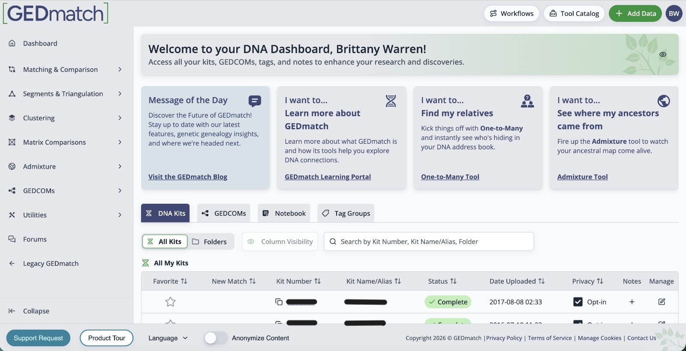
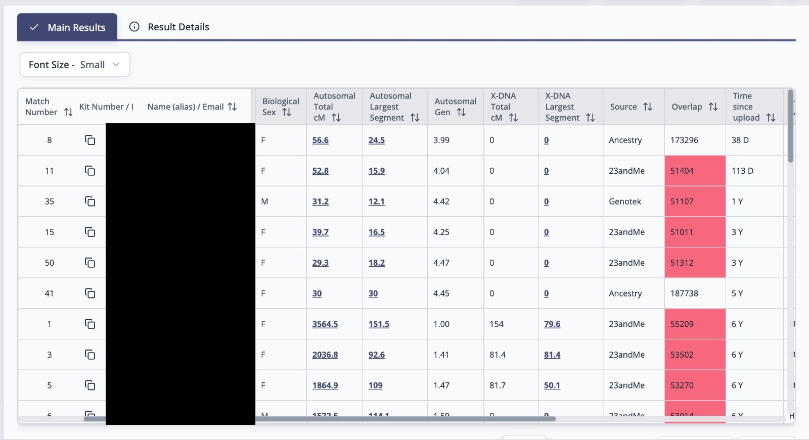
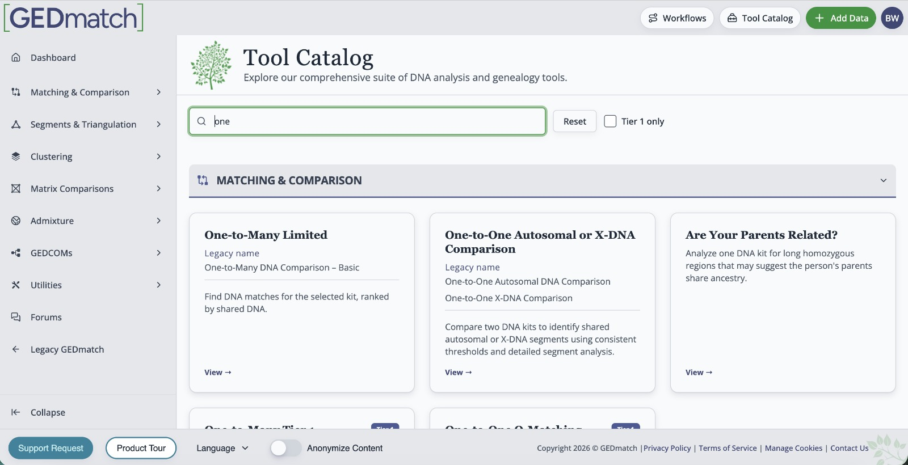
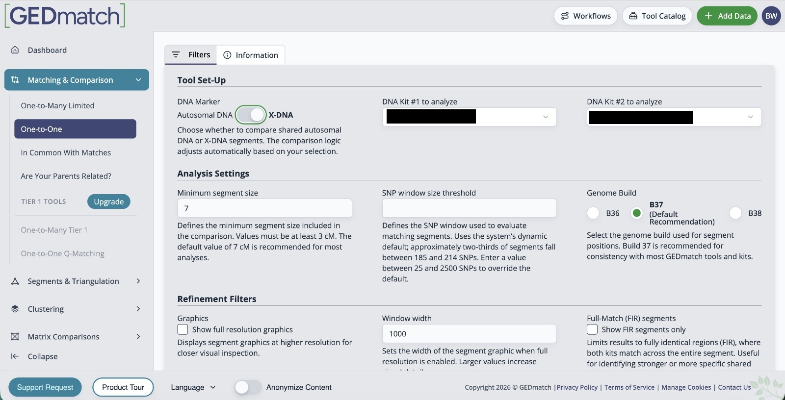

GEDmatch has always been one of the most useful third-party tools for genetic genealogy, particularly when you want to compare DNA results across testing companies. Its weakness has often been the learning curve. The redesigned interface aims to make the tools easier to find, easier to organise and much easier to move between during an active research project.
The most important point is that this redesign is primarily about how you navigate, organise and move between GEDmatch's tools. The familiar DNA-comparison work is still there, but the surrounding workflow is much easier to follow.
My top seven changes at a glance

My Clipboard could transform multi-kit research
Of everything in the new interface, My Clipboard is the feature I think could make the biggest difference to day-to-day DNA research.
GEDmatch's existing Multi-Kit Analysis tools are extremely powerful, but repeatedly copying and pasting kit numbers can make a complicated project feel more cumbersome than it needs to be. My Clipboard is designed to let you build a research list once and then carry that list into other tools.
That matters when you are working with a group of matches rather than a single person. For example, if several matches appear to descend from the same ancestral couple, you could collect the relevant kits, move that group into another comparison tool and continue testing the hypothesis without rebuilding the list from scratch.
The redesigned One-to-Many makes new matches easier to spot
The One-to-Many DNA Comparison is where many GEDmatch investigations begin. It compares one kit against other kits in the database and produces a match list showing people who share DNA with you.
The redesigned One-to-Many includes new-match highlighting and time-based sorting. That sounds simple, but it solves a very practical problem: when you return to a kit after several weeks or months, you want to know what has changed.
Rather than treating the match list as a static report, the new interface should make it easier to identify recently added matches and decide whether any deserve immediate investigation. This is particularly useful in unknown-parentage and brick-wall cases, where one new tester can suddenly connect several previously unexplained matches.

You can search for the right tool instead of remembering where it lives
GEDmatch has a lot of tools. That is one of its strengths, but it is also one of the reasons beginners can find the site intimidating. Knowing that a tool exists is not the same as knowing what it is called or where to find it.
The redesign introduces a searchable tool catalogue with categories and descriptions. In practical terms, a researcher should be able to look for the kind of task they want to perform — matching, segment analysis, clustering, tree work and so on — rather than memorising the old dashboard.
I think this is particularly important for people who upload their DNA to GEDmatch because someone has told them they should, but then have no idea what to do next. Better descriptions should reduce the gap between uploading a kit and actually using it to answer a genealogy question.

DNA kits, GEDCOMs and FamilySearch imports are easier to manage together
The new interface centralises the management of DNA kits, GEDCOM family trees and FamilySearch tree imports. That may not sound as exciting as a new matching tool, but good data management is what makes a large DNA project sustainable.
If you manage several tests — your own, parents, grandparents or other relatives — it is easy for a dashboard to become cluttered. Bringing the associated data into a clearer management area should make it easier to see what belongs to whom and which kits have trees or other supporting information attached.
This also reinforces an important point about genetic genealogy: DNA is most useful when it is combined with documentary family-tree research. A match tells you that two people share DNA. Trees, records, locations and relationships help you work out why.
Folders, column controls and site-wide sorting should make big projects manageable
GEDmatch says the new design uses folders, column controls, search and sorting as a site-wide standard. This is one of those changes that becomes more valuable as a project becomes more complicated.
A researcher dealing with an unknown grandparent, adoption case or difficult paternal line may have dozens of matches under consideration. The ability to organise information consistently is essential if you want to distinguish promising evidence from people you have already investigated and ruled out.
Folders can also encourage researchers to organise by research question rather than trying to solve everything at once: for example, “maternal grandfather”, “Kentucky Logan line”, “unknown great-grandmother”, or “chromosome 7 cluster”.
One-to-One autosomal and X comparisons are finally being combined
The new interface includes a combined One-to-One tool that can toggle between autosomal DNA and X-DNA rather than requiring researchers to treat them as separate destinations.
One-to-One comparisons are useful after you have identified a particular match and want to inspect the shared DNA in greater detail. Bringing the two comparison types together should make the workflow more intuitive, particularly for researchers who do not use X-DNA frequently enough to remember where the separate tool is located.
X-DNA has its own inheritance pattern and should not be interpreted in the same way as ordinary autosomal DNA, but when it is relevant it can help eliminate some ancestral lines from consideration. Making the option easier to reach is therefore a useful interface improvement without changing the underlying genetic analysis.

Optional profiles may make it easier to understand the person behind a kit
GEDmatch is also introducing optional user profiles. This is a different kind of improvement: it does not change the DNA comparison itself, but it could make communication between researchers more useful.
A kit number on its own tells you very little about the research interests of the person who manages it. A profile could potentially give useful context about surnames, locations or genealogy interests and make it easier for two people working on the same family to recognise that connection.
Because profiles are optional, researchers can decide how much they want to share. As with any genealogy platform, I would avoid publishing information about living relatives or anything you would not be comfortable making visible to other users.
How I would use the redesigned GEDmatch in a real case
The most interesting part of the redesign is not any single feature. It is the possibility of moving through a research question more logically.
I would start with One-to-Many and identify the matches most likely to answer the question. I would then add the relevant kits to My Clipboard, run the appropriate One-to-One or multi-kit comparisons, and use folders, notes and sorting to keep the evidence organised.
That sounds obvious, but the old GEDmatch experience often required the researcher to supply much of that workflow themselves. The redesigned interface makes the movement from find a match → investigate the match → compare a group → record what you learned much more natural.
Is the new GEDmatch interface worth trying?
Yes. Now that the redesign is live, the more useful question is which features are worth learning first. The biggest improvements are not flashy changes to the DNA calculations; they are changes that reduce friction. Finding the correct tool, spotting a new match, carrying a group of kits between analyses and keeping a project organised are all easier in the new interface.
That is especially useful for people who have previously opened GEDmatch, seen a long page of tools and closed it again. The platform has always offered far more than a basic match list. A more understandable interface could make those tools accessible to many more family historians.
If you already use GEDmatch heavily, My Clipboard and the redesigned One-to-Many are the two features I would look at first. If you are new to GEDmatch, the searchable tool catalogue and clearer data management may be the changes that matter most.
Professional DNA research
Have plenty of DNA matches but no clear answer?
GEDmatch can provide powerful comparison and segment tools, but the difficult part is often working out which matches belong to which family line and what the DNA actually proves. If you are trying to identify an unknown parent, solve a brick wall or make sense of a complicated match list, I can review the evidence and build a focused research strategy.
Make an Enquiry